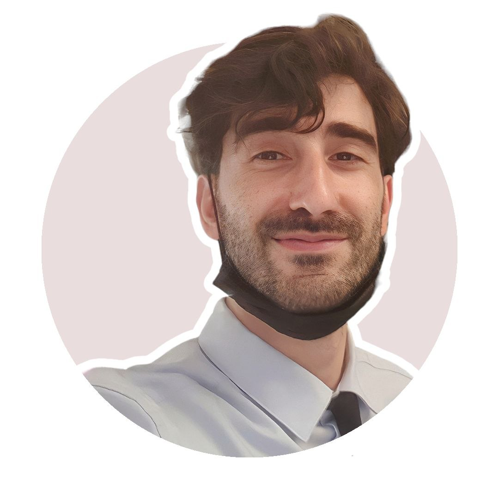

Il mio curriculum
Il mio curriculum
Gian Michele Giua

Obiettivi
- Finire il master di Start2impact
- Diventare un UX/UI designer
- Imparare a programmare
Educazione
- Laurea in chimica industriale (non conclusa)
Esperienze lavorative
Barista/banconista con esperienza pluriennale
- bar Gambrinus
- bar Cristallo
- pasticceria Casa della Panna
- bar Centro
I miei hobby
Contatti